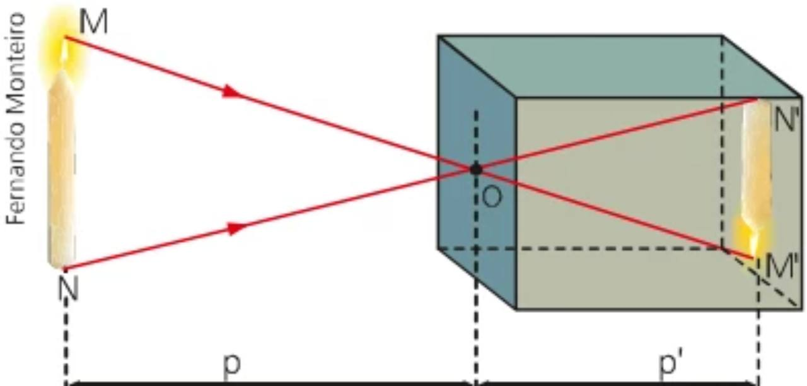

Hipótese inicial
A construção de uma câmara escura permite demonstrar, de forma simples e visual, princípios físicos da luz, como sua propagação retilínea e a formação de imagens invertidas.
Óptica • Luz • Imagem
Uma pequena abertura, um feixe de luz e o princípio que mudou para sempre a forma como enxergamos o mundo.
Testar a câmara01 — Contextualização do projeto
Este trabalho faz parte do Projeto Integrador e investiga a origem e o funcionamento da câmara escura, relacionando conceitos físicos da luz, construção experimental e simulação digital.
Por que a câmara escura foi criada?
A construção de uma câmara escura permite demonstrar, de forma simples e visual, princípios físicos da luz, como sua propagação retilínea e a formação de imagens invertidas.
Investigar o funcionamento da câmara escura por meio de fundamentação científica, experimentação e simulação digital, analisando as variáveis que interferem na formação, no tamanho, na luminosidade e na nitidez da imagem projetada.
02 — O que é?
A câmara escura é um ambiente fechado com um pequeno orifício. A luz refletida pelos objetos externos atravessa essa abertura e projeta, na parede oposta, uma imagem invertida do mundo lá fora.
03 — Fundamentação teórica
A câmara escura pode ser compreendida combinando óptica geométrica e óptica ondulatória. A primeira explica a posição e o tamanho da imagem; a segunda mostra por que um orifício excessivamente pequeno também perde definição.
Em um meio homogêneo e transparente, a luz se propaga aproximadamente em linha reta. O pequeno orifício seleciona uma porção dos raios refletidos por cada ponto do objeto.
Os raios vindos da parte superior do objeto alcançam a parte inferior da tela, e vice-versa. Por isso a projeção aparece invertida vertical e horizontalmente.
A ampliação depende da razão entre a distância da tela (v) e a distância do objeto (u). Já a quantidade de luz admitida cresce com a área do orifício.
Um orifício grande produz círculos geométricos sobrepostos. Quando ele fica pequeno demais, a natureza ondulatória da luz provoca difração. A melhor definição aparece no equilíbrio entre esses efeitos.
Da teoria para o simulador
Os controles alteram d, v, u e a iluminação. A página recalcula ampliação, diâmetro ótimo, borrão, exposição relativa e número f em tempo real.
04 — Laboratório interativo
Ajuste os controles até obter exposição suficiente e um orifício próximo do valor ideal.
Comece ajustando a iluminação.
05 — Metodologia
A etapa experimental utiliza uma caixa de tênis da Puma como corpo da câmara escura. O procedimento foi organizado para permitir a repetição do experimento e o registro das condições observadas.
Objeto-base: caixa de tênis Puma
Dimensões externas da caixa registradas com régua. A tela ocupa praticamente toda a face de 19 × 11,5 cm. O orifício foi produzido com uma ponta de compasso e possui aproximadamente 0,6 mm de diâmetro.
Medir comprimento, largura e altura da caixa. Definir as faces destinadas ao orifício e à tela.
Recortar uma janela em uma das faces menores e fixar o papel-manteiga bem esticado, sem frestas.
Revestir ou pintar internamente a caixa de preto fosco para reduzir reflexos que diminuem o contraste.
Na face oposta à tela, abrir uma pequena janela e cobri-la com papel-alumínio firmemente fixado.
Perfurar cuidadosamente o centro do alumínio com a ponta metálica de um compasso, procurando obter um círculo regular e sem rebarbas.
Fechar todas as entradas de luz, apontar o orifício para uma cena iluminada e observar a projeção invertida na tela.

06 — Resultados e conclusão
O experimento demonstrou a propagação retilínea da luz. Os raios refletidos pelo objeto atravessaram o pequeno orifício em linha aproximadamente reta, cruzaram-se e formaram uma imagem invertida sobre a tela de papel-manteiga.
A projeção parece mais “perfeita” porque utiliza uma fotografia digital e aplica matematicamente brilho, ampliação e desfoque. O ambiente virtual não sofre com frestas, irregularidades do orifício, textura da tela ou luz externa não controlada.
Obter uma imagem nítida é mais difícil. A projeção apresenta menor luminosidade e contraste, sendo muito sensível ao tamanho e ao formato do orifício, à vedação da caixa, à iluminação do objeto e à escuridão do local de observação.
Valores e condições reunidos durante a análise do experimento.
A caixa utilizada, com 33 cm de comprimento, está dentro da faixa de referência. O orifício de 0,6 mm é ligeiramente menor que a recomendação apresentada, enquanto a distância de 12 cm até a tela produz uma imagem menor que a configuração de referência.
Não foram identificadas limitações relevantes de custo ou acesso: a câmara utiliza materiais baratos, fáceis de encontrar e permite que o experimento seja repetido sem equipamentos especializados.
A principal dificuldade foi óptica, e não financeira: controlar a luz externa e obter uma projeção suficientemente nítida e luminosa. Essa dificuldade faz parte do próprio fenômeno estudado.
A câmara escura foi criada para permitir a observação e a projeção de imagens formadas pela luz dentro de um ambiente escuro. O protótipo mostrou que é possível demonstrar, de maneira simples, visual e acessível, a propagação retilínea da luz e a inversão da imagem. A comparação com o simulador também evidenciou que o modelo digital ajuda a compreender as variáveis, enquanto a experiência real revela as dificuldades de luminosidade, vedação e nitidez presentes em uma câmara física.